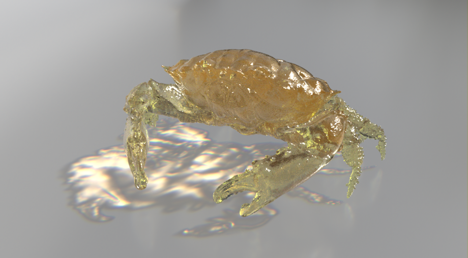

伪焦散效果

地板平面上的玻璃透射伪焦散 (shadow_matte)
Arnold 是单向路径跟踪器，因此渲染逼真焦散的成本很高。这是因为焦散效果会创建大量噪波，并需要非常高的采样值，这可能会导致渲染时间很长。本教程介绍如何创建渲染成本低得多但看起来仍逼真的伪焦散效果。本教程中组合使用 ray_switch、standard_surface 和 facing_ratio 着色器，并将其指定到发射焦散的对象。然后将 shadow_matte 着色器指定给地板 standard_surface.emission 属性，用于产生焦散效果。
应注意，本教程中的方法在物理上不正确，因此演示的结果不是物理上正确的焦散效果。但是，在大多数情况下，渲染的结果看上去应足以达到以假乱真的效果。非常感谢 Slava Sych 为本教程提供的帮助。
 |
 |
要下载对应的着色器，请单击此处。
有关渲染真实焦散的信息，请单击此处。
场景设置和照明
将要从其发射焦散的对象放在场景中。创建一个摄影机并设置所需的位置。创建一个地板平面并将其放在对象下方。
创建 distant_light（带方向性）。将其“曝光”(Exposure)、“角度”(Angle)和“采样数”(Samples)都增加到 3。
distant_light（带方向性）
摄影机玻璃着色器
- 接下来，创建一个 standard_surface 着色器。将其重命名为类似于 CamGlass 的名称，并指定给对象。这将是对摄影机光线可见的着色器。更改以下参数：
specular_roughness：0.070
specular_IOR：1.550
transmission_weight：1.0
coat_weight：1.0
coat_roughness：0.1
coat_IOR：1.550
启用 transmit_aov，以便可以渲染出单独的焦散 AOV。
阴影玻璃着色器
- 接下来，创建一个新的 standard_surface 着色器，并将其重命名为 ShadowGlass。更改以下参数：
specular_roughness：0.1
transmission_weight*：1.0
启用 *transmit_aov
正面比
创建一个 facing_ratio 着色器，并将其输出连接到 ShadowGlass 着色器的 transmission_weight。
使用的 facing_ratio 参数将取决于要使用的特定对象，因此可能需要进行调整。
偏差(Bias)：0.136
增益(Gain)：0.619
启用“线性”(Linear)
启用“反转”(Invert)
facing_ratio -> standard_surface (ShadowGlass)
光线切换着色器
接下来，创建一个 ray_switch 着色器并将其指定给对象。将其重命名为 GlassMat。这将用于向 Arnold 告知渲染玻璃对象时要使用的光线。
将 CamGlass 着色器输出连接到 GlassMat（光线切换）着色器的 camera、diffuse_reflection、diffuse_transmission、specular_reflection 和 transmission 参数。
将 ShadowGlass 着色器输出连接到 GlassMat 着色器的 shadow 参数。
光线切换着色器
地板平面着色器
- 创建另一个 standard_surface 着色器并将其重命名为 FloorMat。将其指定给地板平面几何体。更改以下参数：
基础权重(Base Weight)：0.3
镜面反射粗糙度(Specular Roughness)：0.2
自发光(Emission)：1
阴影蒙版 -> 范围 -> 颜色校正 -> 标准曲面
- 创建 shadow_matte、范围*和 *color_correct 着色器。
- 将 shadow_matte 输出连接到范围输入。将范围*输出连接到 *color_correct 的输入，并将 color_correct 输出连接到
FloorMat 着色器的 emission_color。
阴影蒙版(Shadow Matte)：
将“背景”(Background)设置为“背景色”(Background Color)。
背景色：0.0 0.0 0.0
*阴影颜色：1.0 1.0 1.0
阴影不透明度：1.0
背面照明：0.0
启用：*Alpha 遮罩
漫反射强度：0.0
范围：
启用“平滑步长”(Smoothstep)
颜色校正：
Gamma：0.6
shadow_matte -> 范围 -> color_correct -> FloorMat (standard_surface)
天穹灯光
使用 skydome_light 时，为了不破坏焦散效果，需要执行一些步骤。
- 创建一个 skydome_light，将 HDR 贴图连接到其“颜色”(Color)参数，并设置以下参数：
采样数(Samples)：3
在“可见性”(Visibility)中禁用“透射”(Transmission)和“镜面反射”(Specular)以外的所有参数。
此灯光将用于为玻璃材质本身照明，焦散效果不需要此灯光。您可能需要断开 skydome_light 与地板平面之间的灯光链接，否则可能无法正常显示焦散效果。如果您需要使用 HDRI 从背景照明，请尝试创建另一个 skydome_light，并断开其与玻璃对象的灯光链接。

设置了 skydome_light 的场景。玻璃对象的照明效果更明显。
用于合成的渲染层
现在，可以对场景设置渲染层以便进行 AOV 合成。它们可以用于微调焦散、增加色散效果等。
| 焦散层 | 玻璃层 | 预合成版本 |
增加 specular_ray_depth 可在玻璃对象中创建更多反射反弹，并产生更加逼真的效果。请注意，增加此值会增加渲染时间。
玻璃着色器（左）。地板着色器（右）。